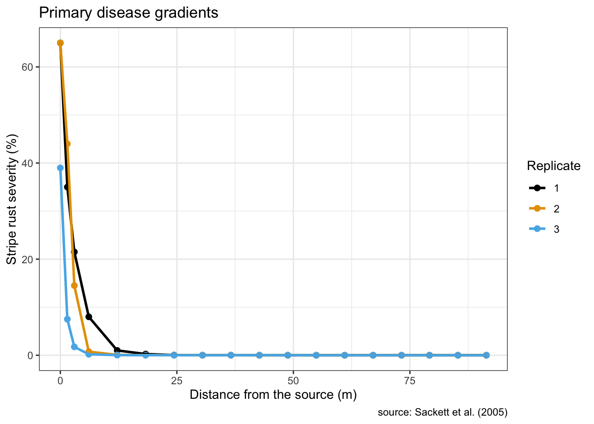
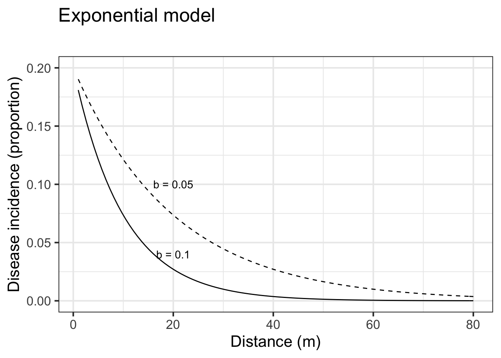
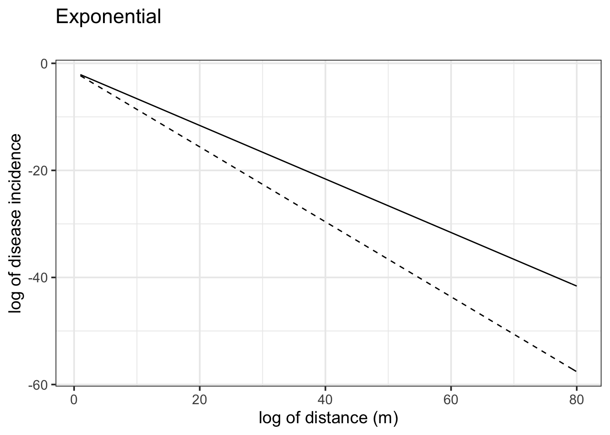
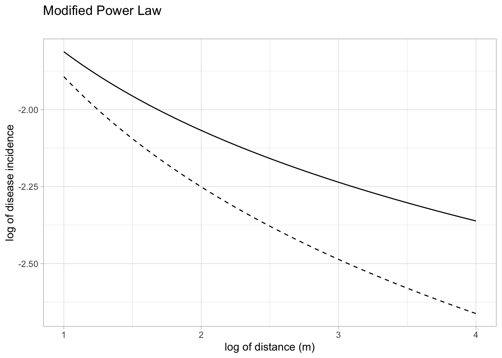
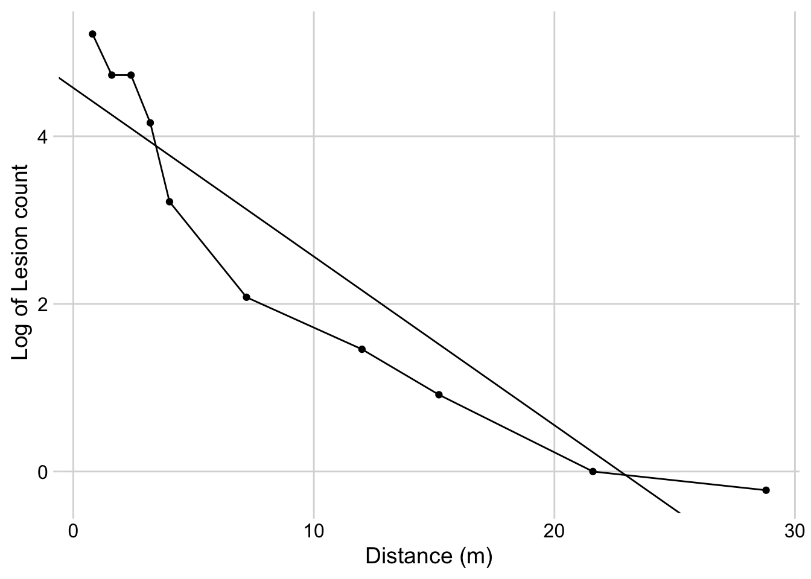
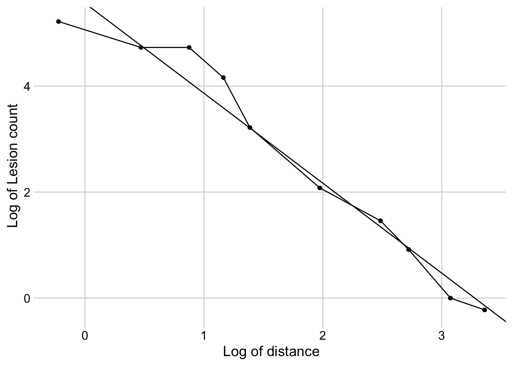
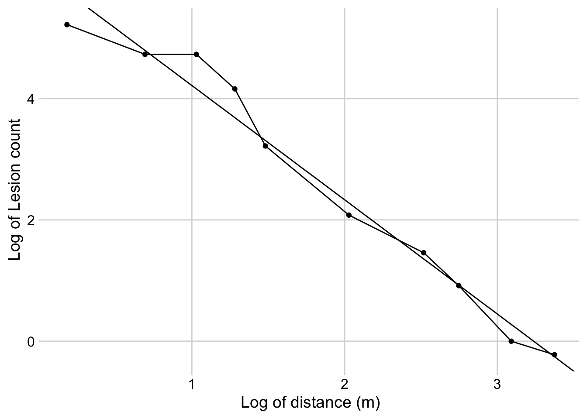

library(tidyverse)
library(ggthemes)
library(patchwork)
library(cowplot) # for themes
theme_set(theme_minimal_grid()) # set global theme2 Spatial gradients
2.1 Introduction
The assessment of disease in space, in terms of changes in the intensity as it spreads over distance, is called disease gradient. In reality, it is the dispersal (migration) of the pathogen by various means (e.g. wind, vectors, rain, movement of infected material or human mediation) that promotes the spread of plant diseases within a field or across continents and generates the disease gradients. There are two kinds of gradients, the inoculum gradient where host availability is not necessarily required and the disease gradient where the three elements of the disease triangle are required.
In disease gradients, assuming that there is only a single source of inoculum, the intensity of the disease decreases more steeply within short distances of the source, and less steeply at greater distances until they reach zero or a low background level of occasional diseased plants. The shapes of the gradients are defined by mechanisms associated with the dispersal of the inoculum which depends on the biology of the pathogen but strongly to environmental factors that affect pathogen dispersal.
When studying disease gradients, researchers need to make sure that there is a well defined single source of inoculum. In gradients, this is called a focus, from where the inoculum originates. The resulting gradients can be classified in two types: primary or secondary. The primary gradient originates only from the initial focus, while the secondary gradient originates from the movement of inoculum produced at previously infected (due to primary gradients) plants to other plants at increasing distances from the source. It is expected that a mix of both kinds of gradients exists as the disease increases over time.
Similar to disease progress curves, models can be fitted empirically to observed disease gradient curves and provide insights into the mechanisms of inoculum dispersal and deposition, the source of inoculum, and the physical processes underlying dispersal.
2.2 Models
When modeling disease gradients, the distance is represented by \(x\), a continuous variable which can be expressed by various units (cm, m, km, etc). The gradient models, similar to the population dynamics models (disease progress) are of the deterministic type. The difference is that, for disease progress curves, disease intensity tends to increase with increasing time, while in disease gradients the disease intensity tends to decrease with increasing distance from the source of inoculum. Two models are most commonly fitted to data on disease gradients. More details about these models can be obtained it this tutorial.
2.2.1 Exponential model
The exponential model is also known as Kiyosawa & Shiyomi model. The differential of the exponential model is given by
\(\frac{dy}{dx}\) = \(-b_{E}.y\) ,
where \(b_{E}\) is the exponential form of the rate of decline and \(y\) is the disease intensity. This model suggests that \(y\) (any disease intensity) is greater close to the source of inoculum, or at the distance zero. The integral form of the model is given by
\(y = a . e^{-b.x}\) ,
where \(a\) is the disease intensity at the distance zero and \(b\) is the rate of decline, in this case negative because disease intensity decreases with the increase of the distance from inoculum source. Let’s make a plot for two disease gradients of varying parameters for this model.
First we need to load essential packages for programming, customizing the outputs and defining a global ggplot theme.
Set the parameters for the exponential model with two rates and same inoculum at the source:
a1 <- 0.2 # y at distance zero for gradient 1
a2 <- 0.2 # y at distance zero for gradient 2
b1 <- 0.1 # decline rate for gradient 1
b2 <- 0.05 # decline rate for gradient 2
max1 <- 80 # maximum distance for gradient 1
max2 <- 80 # maximum distance for gradient 2
dat <- data.frame(x = seq(1:max1), y = seq(0:a1))The following code allows to visualize the model predictions.
dat %>%
ggplot(aes(x, y)) +
stat_function(fun = function(x) a1 * exp(-b1 * x), linetype = 1) +
stat_function(fun = function(x) a2 * exp(-b2 * x), linetype = 2) +
ylim(0, a1) +
annotate("text", x = 20, y = 0.04, label = "b = 0.1") +
annotate("text", x = 20, y = 0.10, label = "b = 0.05") +
labs(
title = "Exponential model",
subtitle = "",
x = "Distance (m)",
y = "Disease incidence (proportion)"
)
2.2.2 Power law model
Also known as the modified Gregory’s model (Gregory was a pioneer in the use this model to describe plant disease gradients). In the power law model, \(Y\) is proportional to the power of the distance, and is given by:
\(Y = a_{P}.x - b_{P}\)
where \(a_{P}\) and \(b_{P}\) are the two parameters of the power law model. They differ from the exponential because as closer to \(x\) is to zero, \(Y\) is indefinitely large (not meaningful biologically). However, the model can still be useful because it produces realistic values at any distance \(x\) away from the source. The values of the \(a_{P}\) parameter should be interpreted in accord to the scale of \(x\), whether in centimeters or meters. If the distance between the source and the first measure away from the source is 0.5m, it is so more appropriate to record the distance in cm than in m or km.
Once \(y\) at the distance zero from the source is undefined when using the power law model, this is usually modified by the addition of a positive constant \(C\) in \(x\):
\(Y = a_{P}.(x + C) - b_{P}\)
For this reason, the model is named as the modified power law. Here, the constant \(C\) is of the same unit of \(x\). At the distance zero, the positive constant is a term that express the size of the inoculum source. In other words, the \(a\) parameter is a theoretical value of \(Y\) at the distance \(1-C\) from the center of the inoculum source.
Let’s plot two gradients with two rate parameters for the modified power law model:
C <- 0.5
a1 <- 0.2 # y at zero distance for gradient 1
a2 <- 0.2 # y at zero distance for gradient 2
b1 <- 0.5 # decline rate for gradient 1
b2 <- 0.7 # decline rate for gradient 2
max1 <- 80 # maximum distance for gradient 1
max2 <- 80 # maximum distance for gradient 2
dat2 <- data.frame(x = seq(1:max1), y = seq(0:a1))
dat2 %>%
ggplot(aes(x, y)) +
stat_function(fun = function(x) a1 * ((x + C)^-b1), linetype = 1) +
stat_function(fun = function(x) a2 * ((x + C)^-b2), linetype = 2) +
ylim(0, a1 - 0.02) +
annotate("text", x = 20, y = 0.03, label = "b = 0.1") +
annotate("text", x = 20, y = 0.06, label = "b = 0.05") +
labs(
title = "Modified Power Law",
subtitle = "",
x = "Distance (m)",
y = "Disease incidence"
)
The differential equation of the power law model is given by:
\(\frac{dy}{dx}\) = \(\frac{-b_{P}.Y}{x - C}\)
Similar to the exponential model, \(\frac{dy}{dx}\) is proportional to \(Y\), meaning that the gradient is steeper (more negative) at the highest disease intensity value, usually closer to the source.
2.3 Linearization of the models
2.3.1 Transformations of y
The gradient models, again similar to the temporal disease models, are non linear in their parameters. The model is intrinsically linear if transformations are applied (according to the model) in both sides of the equations. The linear model in its generic state is given by
\(y* = a* + bx\) ,
where the asterisk in \(a\) indicated that one of the transformations was applied in \(y\) that produced the linear model. Note that \(a*\) is the transformed version of the initial disease intensity, which needs to be returned to the original scale according to the respective back-transformation. Follows the linearized form of the two most common gradient models.
\(ln(y) = ln(a_{E}) - b_{E}. x\)
\(ln(y) = ln(a_{P}) - b_{E}. ln(x+C)\)
2.3.2 Plot for the linearized form of models
Let’s visualize the linearization of the exponential model with two different slopes (gradient 1 and 2). Note that the transformation used was \(ln(y)\).
Follows the linearization of the modified power law model.
C <- 0.5
a1 <- 0.2 # y at zero distance for gradient 1
a2 <- 0.2 # y at zero distance for gradient 2
b1 <- 0.5 # decline rate for gradient 1
b2 <- 0.7 # decline rate for gradient 2
max1 <- 80 # maximum distance for gradient 1
max2 <- 80 # maximum distance for gradient 2
dat2 <- data.frame(x = seq(1:max1), y = seq(0:a1))
dat2 %>%
ggplot(aes(x, y)) +
stat_function(fun = function(x) log(a1) - (b1 * x), linetype = 1) +
stat_function(fun = function(x) log(a2) - (b2 * x), linetype = 2) +
labs(
title = "Exponential",
subtitle = "",
x = "log of distance (m)",
y = "log of disease incidence"
)
Follows the linearization of the modified power law model. Note that the transformation used was \(ln(y)\) and \(ln(x+C)\) .
C <- 0.5
a1 <- 0.2 # y at zero distance for gradient 1
a2 <- 0.2 # y at zero distance for gradient 2
b1 <- 0.5 # decline rate for gradient 1
b2 <- 0.7 # decline rate for gradient 2
max1 <- log(80) # maximum distance for gradient 1
max2 <- log(80) # maximum distance for gradient 2
dat2 <- data.frame(x = seq(1:max1), y = seq(0:a1))
dat2 %>%
ggplot(aes(x, y)) +
stat_function(fun = function(x) log(a1) - (b1 * log(x + C)), linetype = 1) +
stat_function(fun = function(x) log(a2) - (b2 * log(x + C)), linetype = 2) +
labs(
title = "Modified Power Law",
subtitle = "",
x = "log of distance (m)",
y = "log of disease incidence"
)
2.4 Model fitting
2.4.1 Dataset
The hypothetical data below shows a gradient for the number of lesions counted at varying distances in meters from the source. Let’s create two vectors, one for the distances \(x\) and the other for the lesion count \(Y\), and then a dataframe by combining the two vectors.
# create the two vectors
x <- c(0.8, 1.6, 2.4, 3.2, 4, 7.2, 12, 15.2, 21.6, 28.8)
Y <- c(184.9, 113.3, 113.3, 64.1, 25, 8, 4.3, 2.5, 1, 0.8)
grad1 <- data.frame(x, Y) # create the dataframe
grad1 # show the gradient x Y
1 0.8 184.9
2 1.6 113.3
3 2.4 113.3
4 3.2 64.1
5 4.0 25.0
6 7.2 8.0
7 12.0 4.3
8 15.2 2.5
9 21.6 1.0
10 28.8 0.82.4.2 Visualize the gradient
grad1 %>%
ggplot(aes(x, Y))+
geom_point()+
geom_line()+
labs(y = "Lesion count",
x = "Distance (m)")
2.4.3 Linear regression
A linear regression model is fitted to the transformed variables according to the model. The higher the coefficient of determination, the better is the fit of the model to the data.
Exponential model
reg_exp <- lm(log(Y) ~ x, data = grad1)
summary(reg_exp)
Call:
lm(formula = log(Y) ~ x, data = grad1)
Residuals:
Min 1Q Median 3Q Max
-1.04868 -0.58973 -0.00144 0.59572 0.99554
Coefficients:
Estimate Std. Error t value Pr(>|t|)
(Intercept) 4.57705 0.35222 12.995 1.17e-06 ***
x -0.20124 0.02656 -7.576 6.45e-05 ***
---
Signif. codes: 0 '***' 0.001 '**' 0.01 '*' 0.05 '.' 0.1 ' ' 1
Residual standard error: 0.7612 on 8 degrees of freedom
Multiple R-squared: 0.8777, Adjusted R-squared: 0.8624
F-statistic: 57.39 on 1 and 8 DF, p-value: 6.45e-05Power law model with \(C = 0\).
reg_p <- lm(log(Y) ~ log(x), data = grad1)
summary(reg_p)
Call:
lm(formula = log(Y) ~ log(x), data = grad1)
Residuals:
Min 1Q Median 3Q Max
-0.72281 -0.11989 -0.03146 0.08755 0.65267
Coefficients:
Estimate Std. Error t value Pr(>|t|)
(Intercept) 5.5638 0.2456 22.66 1.53e-08 ***
log(x) -1.6978 0.1191 -14.26 5.71e-07 ***
---
Signif. codes: 0 '***' 0.001 '**' 0.01 '*' 0.05 '.' 0.1 ' ' 1
Residual standard error: 0.4235 on 8 degrees of freedom
Multiple R-squared: 0.9621, Adjusted R-squared: 0.9574
F-statistic: 203.3 on 1 and 8 DF, p-value: 5.71e-07Power law model with \(C = 0.4\).
reg_pm <- lm(log(Y) ~ log(x + 0.4), data = grad1)
summary(reg_pm)
Call:
lm(formula = log(Y) ~ log(x + 0.4), data = grad1)
Residuals:
Min 1Q Median 3Q Max
-0.53733 -0.17258 -0.03646 0.08450 0.56928
Coefficients:
Estimate Std. Error t value Pr(>|t|)
(Intercept) 6.1007 0.2283 26.73 4.13e-09 ***
log(x + 0.4) -1.8841 0.1084 -17.38 1.22e-07 ***
---
Signif. codes: 0 '***' 0.001 '**' 0.01 '*' 0.05 '.' 0.1 ' ' 1
Residual standard error: 0.3495 on 8 degrees of freedom
Multiple R-squared: 0.9742, Adjusted R-squared: 0.971
F-statistic: 302.2 on 1 and 8 DF, p-value: 1.223e-07Graphs for the fitted models
Exponential
grad1 %>%
ggplot(aes(x, log(Y)))+
geom_point()+
geom_line()+
geom_abline(slope = coef(reg_exp)[[2]], intercept = coef(reg_exp)[[1]])+
labs(y = "Log of Lesion count",
x = "Distance (m)")
Power law model
grad1 %>%
ggplot(aes(log(x), log(Y)))+
geom_point()+
geom_line()+
geom_abline(slope = coef(reg_p)[[2]], intercept = coef(reg_p)[[1]])+
labs(y = "Log of Lesion count",
x = "Log of distance")
Modified power law model
grad1 %>%
ggplot(aes(log(x+0.4), log(Y)))+
geom_point()+
geom_line()+
geom_abline(slope = coef(reg_pm)[[2]], intercept = coef(reg_pm)[[1]])+
labs(y = "Log of Lesion count",
x = "Log of distance (m)")
Conclusion: The modified power law model provided the best fit.